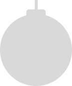

In the first, one may sleep standing up; in the other, satisfy one's fecal necessities. Alsothrough here passes a spiral stairway, which sinks abysmally and soars upwards to remotedistances. In the hallway there is a mirror which faithfully duplicates all appearances. Menusually infer from this mirror that the Library is not infinite (if it were, why this illusoryduplication?); I prefer to dream that its polished surfaces represent and promise the infinite...Light is provided by some spherical fruit which bear the name of lamps. There are two,transversally placed, in each hexagon. The light they emit is insufficient, incessant.